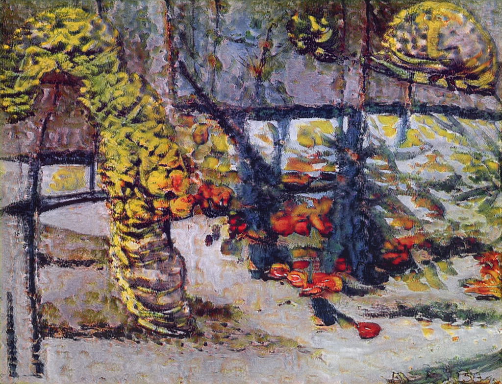
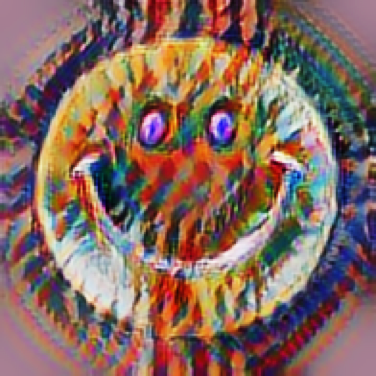
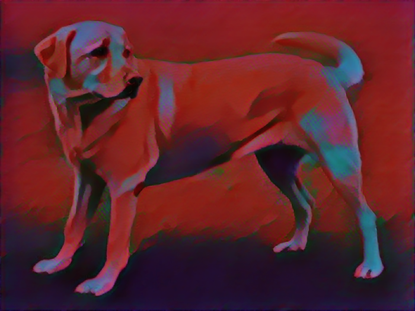

Create new painting
with art trend

AI Painting with trend
Try New works of art that do not exist !
We support various art trend that Naturalism, Post-Impressionism, Social realism, Renaissance.
Go!
Style Transformation

AI Painting with artist
Convert your own drawings or photographic images into the style of famous paintings. Transform into the style of masterpieces like Van Gogh, Mondrian and Alphonse Mucha!
Go!
Create new painting
with pattern

AI Painting with pattern
Create a new style picture by collaborating a picture or picture with a specific pattern image filter. AI just helps you with your ideas !
Go!